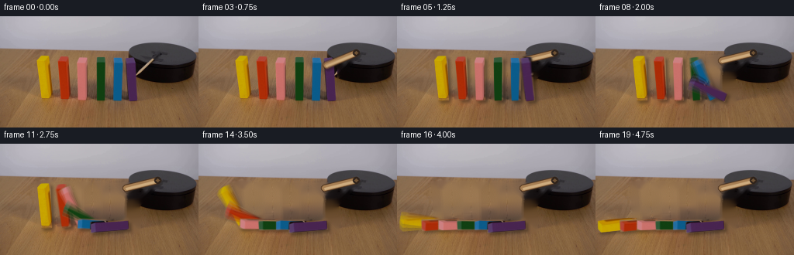
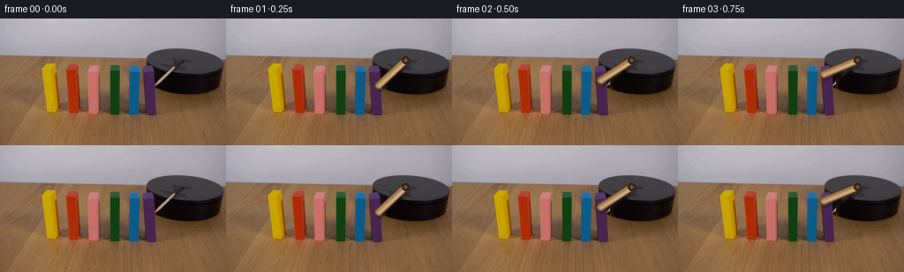

CODING AGENTS AS PIXEL WORLD MODELS
traex/GPT-5.6-Sol · 0035
点击播放 · 原生 RGB 像素
逐轮保存的候选
回放视频、检查图与代码变化。
每份候选均可单独播放。实际图片检查记录在下方工具轨迹中。
候选 01播放与检查图
点击播放 · 原生 RGB 像素


展开代码变化
--- 上一保存版本
+++ 本次保存版本
@@ -0,0 +1,187 @@
+from pathlib import Path
+import math
+import cv2
+import numpy as np
+from PIL import Image
+import artifact_io
+
+ROOT = Path(__file__).resolve().parent
+FIRST = np.asarray(Image.open(ROOT / "first_frame.png").convert("RGB"), dtype=np.uint8)
+H, W = FIRST.shape[:2]
+
+# The six painted wooden dominoes, from the far end of the row to the striker.
+# Corners are top-left, top-right, bottom-right, bottom-left. They follow the
+# slight perspective/lean visible in the source photograph.
+QUADS = [
+ np.float32([[48,52],[64,51],[66,108],[53,109]]),
+ np.float32([[75,53],[89,52],[91,107],[80,108]]),
+ np.float32([[100,53],[112,53],[113,108],[102,109]]),
+ np.float32([[124,54],[136,53],[136,108],[126,109]]),
+ np.float32([[146,54],[158,54],[159,108],[148,109]]),
+ np.float32([[161,53],[175,53],[177,109],[166,110]]),
+]
+
+
+def polygon_mask(poly, grow=0):
+ m = np.zeros((H, W), np.uint8)
+ p = np.rint(poly).astype(np.int32)
+ cv2.fillConvexPoly(m, p, 255, lineType=cv2.LINE_AA)
+ if grow:
+ m = cv2.dilate(m, np.ones((grow*2+1, grow*2+1), np.uint8))
+ return m
+
+# Make a clean table/background plate. Only narrow object silhouettes are
+# removed, allowing Telea inpainting to continue the naturally mottled wood.
+domino_remove = np.zeros((H, W), np.uint8)
+for q in QUADS:
+ domino_remove = np.maximum(domino_remove, polygon_mask(q, 3))
+# Include the little contact shadows immediately under the standing pieces.
+for q in QUADS:
+ x0 = int(q[:,0].min())-2; x1 = int(q[:,0].max())+4
+ y0 = int(q[:,1].max())-3; y1 = int(q[:,1].max())+4
+ cv2.rectangle(domino_remove, (x0,y0), (x1,y1), 255, -1)
+
+# The original light wooden arm runs from its hidden pin down-left to the first
+# domino. Remove it before drawing it in successive angular positions.
+pivot = np.array([203.0, 47.0], np.float32)
+old_tip = np.array([174.5, 78.0], np.float32)
+stick_remove = np.zeros((H, W), np.uint8)
+cv2.line(stick_remove, tuple(np.rint(pivot).astype(int)),
+ tuple(np.rint(old_tip).astype(int)), 255, 10, cv2.LINE_AA)
+# Do not let removing the arm eat into the colored face of the purple domino.
+stick_only_plate = cv2.inpaint(FIRST, stick_remove, 4, cv2.INPAINT_TELEA)
+for q in QUADS:
+ keep = polygon_mask(q, 1) > 0
+ stick_only_plate[keep] = FIRST[keep]
+
+all_remove = np.maximum(domino_remove, stick_remove)
+clean_plate = cv2.inpaint(FIRST, all_remove, 5, cv2.INPAINT_TELEA)
+
+# Preserve each original painted face as a texture; homographies make grain,
+# highlights, bevels and small wear marks move with the block.
+SPRITES = []
+for q in QUADS:
+ mask = polygon_mask(q, 0)
+ SPRITES.append((q, mask))
+
+
+def over(dst, layer, alpha):
+ """Alpha composite uint8 RGB layer onto dst in place."""
+ a = alpha.astype(np.float32)[:, :, None] / 255.0
+ dst[:] = np.clip(dst.astype(np.float32)*(1-a) + layer.astype(np.float32)*a, 0, 255).astype(np.uint8)
+
+
+def draw_stick(im, frame_time):
+ # Clockwise rotation in image coordinates. It accelerates gently, reaches
+ # the purple block at about 1.1 s, and then remains pressed against it.
+ u = np.clip(frame_time / 4.45, 0.0, 1.0)
+ ease = u*u*(3.0-2.0*u)
+ ang = math.radians(133.0 + (166.0-133.0)*ease)
+ length = 42.0
+ tip = pivot + length*np.array([math.cos(ang), math.sin(ang)], np.float32)
+ p0 = tuple(np.rint(pivot).astype(int)); p1 = tuple(np.rint(tip).astype(int))
+ # Subtle cast shadow, dark wooden edge, warm body and lengthwise highlight.
+ shadow = im.copy()
+ cv2.line(shadow, (p0[0]+2,p0[1]+3), (p1[0]+2,p1[1]+3), (20,15,12), 8, cv2.LINE_AA)
+ im[:] = cv2.addWeighted(im, 0.72, shadow, 0.28, 0)
+ cv2.line(im, p0, p1, (74,48,28), 8, cv2.LINE_AA)
+ cv2.line(im, p0, p1, (166,126,83), 6, cv2.LINE_AA)
+ # Highlight is shifted toward the upper-left edge.
+ d = tip-pivot; n = np.array([d[1],-d[0]])/(np.linalg.norm(d)+1e-6)
+ hp0 = tuple(np.rint(pivot+n*1.25).astype(int)); hp1 = tuple(np.rint(tip+n*1.25).astype(int))
+ cv2.line(im, hp0, hp1, (205,171,126), 2, cv2.LINE_AA)
+ cv2.circle(im, p0, 4, (45,34,27), -1, cv2.LINE_AA)
+ cv2.circle(im, p0, 2, (111,82,52), -1, cv2.LINE_AA)
+
+
+def fall_amount(frame_time, index):
+ # Impact travels from the rightmost block to the left. Gravity gives each
+ # fall a visibly accelerating first half, followed by a tiny settling bounce.
+ start = 4.45 + (5-index)*1.48
+ duration = 4.35
+ u = (frame_time-start)/duration
+ if u <= 0:
+ return 0.0
+ if u < 1:
+ u = np.clip(u, 0, 1)
+ return min(1.0, 0.10*u + 1.15*u*u - 0.25*u*u*u)
+ # Very small damped rebound after the face strikes the tabletop.
+ z = u-1.0
+ return float(np.clip(1.0 - 0.035*math.exp(-2.8*z)*math.sin(8.0*z), .96, 1.0))
+
+
+def target_quad(q, amount):
+ if amount <= 1e-7:
+ return q.copy()
+ # Ease the physical angle only slightly; fall_amount already accelerates.
+ theta = amount * (math.pi/2)
+ c, s = math.cos(theta), math.sin(theta)
+ # Clockwise-looking propagation of contact, while each pushed block tips
+ # left around its bottom-left corner (screen-space CCW rotation).
+ R = np.array([[c, s],[-s, c]], np.float32)
+ pivot_b = q[3].copy()
+ out = np.empty_like(q)
+ for k in range(4):
+ rel = q[k]-pivot_b
+ rr = R @ rel
+ # Foreshortening along the receding table plane when nearly horizontal.
+ rr[0] *= (1.0 - 0.13*s)
+ out[k] = pivot_b + rr
+ return out
+
+
+def warp_sprite(q, target, source_mask):
+ M = cv2.getPerspectiveTransform(q.astype(np.float32), target.astype(np.float32))
+ layer = cv2.warpPerspective(FIRST, M, (W,H), flags=cv2.INTER_LINEAR,
+ borderMode=cv2.BORDER_CONSTANT, borderValue=0)
+ alpha = cv2.warpPerspective(source_mask, M, (W,H), flags=cv2.INTER_LINEAR,
+ borderMode=cv2.BORDER_CONSTANT, borderValue=0)
+ return layer, alpha
+
+
+def render_at(t):
+ # Prior to impact the source blocks can remain completely untouched.
+ active = t >= 4.35
+ im = (clean_plate if active else stick_only_plate).copy()
+ draw_stick(im, t)
+ if not active:
+ return im
+
+ targets = [target_quad(q, fall_amount(t,i)) for i,q in enumerate(QUADS)]
+ # Soft shadows are rendered together first, beneath every wooden piece.
+ shadow_a = np.zeros((H,W), np.uint8)
+ for tar in targets:
+ sh = tar + np.float32([3.0,3.0])
+ cv2.fillConvexPoly(shadow_a, np.rint(sh).astype(np.int32), 82, cv2.LINE_AA)
+ shadow_a = cv2.GaussianBlur(shadow_a, (7,7), 2.2)
+ black = np.zeros_like(im)
+ over(im, black, shadow_a)
+
+ # Far/left pieces first: a falling piece naturally passes over the neighbor
+ # it has just struck.
+ for (q,src_mask), tar in zip(SPRITES, targets):
+ layer, alpha = warp_sprite(q, tar, src_mask)
+ over(im, layer, alpha)
+ # A narrow dark contact edge gives the blocks convincing thickness.
+ if np.linalg.norm(tar[2]-tar[3]) > 2:
+ p3=tuple(np.rint(tar[3]).astype(int)); p2=tuple(np.rint(tar[2]).astype(int))
+ edge = im.copy(); cv2.line(edge,p3,p2,(47,32,24),1,cv2.LINE_AA)
+ im[:] = cv2.addWeighted(im,.78,edge,.22,0)
+ return im
+
+
+def main():
+ frames = [FIRST.copy()]
+ # Three shutter samples provide restrained, physically plausible motion blur
+ # at the low 4 fps capture rate, while the locked camera/background stays crisp.
+ for f in range(1,20):
+ samples = [render_at(f+d).astype(np.float32) for d in (-0.16,0.0,0.16)]
+ frame = np.clip(sum(samples)/len(samples),0,255).astype(np.uint8)
+ frames.append(frame)
+ frames = np.stack(frames).astype(np.uint8)
+ assert frames.shape == (20,144,256,3)
+ assert np.array_equal(frames[0], FIRST)
+ artifact_io.save(frames, ROOT)
+
+if __name__ == "__main__":
+ main()
可观测工具轨迹
实际执行的命令与返回图片。
命令 1exit 0
/bin/bash -lc "cat GENERATION_RULES.md && printf '\\n---PROMPT---\\n' && cat prompt.txt"
命令 2exit 127
/bin/bash -lc "find . -maxdepth 2 -type f -printf '%p\\n' | sort && file first_frame.png"
命令 3exit 0
/bin/bash -lc "python3 - <<'PY'
from PIL import Image
import numpy as np
im=np.array(Image.open('first_frame.png').convert('RGB'))
print(im.shape, im.dtype, im.min((0,1)), im.max((0,1)), im.mean((0,1)))
# clusters via sklearn or cv2 kmeans
from sklearn.cluster import KMeans
X=im.reshape(-1,3)
km=KMeans(n_clusters=16, random_state=0,n_init=5).fit(X[::3])
C=np.rint(km.cluster_centers_).astype(int)
lab=km.predict(X)
counts=np.bincount(lab,minlength=16)
for i in np.argsort(-counts): print(counts[i],C[i])
# sample horizontal grid medians and pixel runs on rows every 12
print('grid avg 16x9')
for gy in range(9):
s=[]
for gx in range(16): s.append(tuple(np.mean(im[gy*16:(gy+1)*16,gx*16:(gx+1)*16],axis=(0,1)).astype(int)))
print(gy,s)
PY"命令 4exit 0
/bin/bash -lc "python3 - <<'PY'
from PIL import Image
import numpy as np
from sklearn.cluster import KMeans
I=np.array(Image.open('first_frame.png').convert('RGB'))
# kmeans 20 full
km=KMeans(n_clusters=24,random_state=1,n_init=8).fit(I.reshape(-1,3))
C=km.cluster_centers_; L=km.labels_.reshape(144,256)
chars='0123456789ABCDEFGHIJKLMN'
# sort clusters by brightness and remap
order=np.argsort(C.mean(1)); mp=np.empty(24,int);mp[order]=np.arange(24)
print('clusters dark->light')
for j,i in enumerate(order): print(chars[j],np.rint(C[i]).astype(int),np.sum(L==i))
for y in range(0,144,3):
print(f'{y:03}', ''.join(chars[mp[np.bincount(L[y:y+3,x:x+3].ravel(),minlength=24).argmax()]] for x in range(0,256,3)))
PY"命令 5exit 0
/bin/bash -lc "python3 - <<'PY'
import cv2,numpy as np
from PIL import Image
I=np.array(Image.open('first_frame.png').convert('RGB')); hsv=cv2.cvtColor(I,cv2.COLOR_RGB2HSV)
classes={
'black': np.max(I,2)<50,
'dark':np.mean(I,2)<65,
'yellow':(hsv[:,:,0]>18)&(hsv[:,:,0]<40)&(hsv[:,:,1]>120)&(hsv[:,:,2]>100),
'orange':(hsv[:,:,0]>4)&(hsv[:,:,0]<18)&(hsv[:,:,1]>100)&(hsv[:,:,2]>100),
'red':((hsv[:,:,0]<8)|(hsv[:,:,0]>170))&(hsv[:,:,1]>50)&(hsv[:,:,2]>100),
'green':(hsv[:,:,0]>40)&(hsv[:,:,0]<80)&(hsv[:,:,1]>60)&(hsv[:,:,2]>50),
'blue':(hsv[:,:,0]>85)&(hsv[:,:,0]<125)&(hsv[:,:,1]>50)&(hsv[:,:,2]>60),
'purple':(hsv[:,:,0]>125)&(hsv[:,:,0]<170)&(hsv[:,:,1]>30)&(hsv[:,:,2]>40),
}
for name,m in classes.items():
n,L,st,c=cv2.connectedComponentsWithStats(m.astype('uint8'))
print('\\n',name,m.sum())
for x,y,w,h,a in st[1:]:
if a>10: print(' ',x,y,w,h,a)
# detailed rows run encoded nearest category every y
names=list(classes); masks=np.stack([classes[n] for n in names])
print('\\nRUNS')
for y in range(40,116,4):
cats=[]
for x in range(256):
ids=np.where(masks[:,y,x])[0]
cats.append(names[ids[-1]][0].upper() if len(ids) else '.')
out=[]; s=0
for x in range(1,257):
if x==256 or cats[x]"'!=cats[s]:
if x-s>=2 and cats[s]!='"'.': out.append(f'{cats[s]}{s}-{x-1}')
s=x
print(y,' '.join(out))
PY"命令 6exit 0
/bin/bash -lc "python3 - <<'PY'
from PIL import Image
import numpy as np,cv2
I=np.array(Image.open('first_frame.png').convert('RGB'))
# region x155..255 y25..120 2x2, luminosity symbols; hue colors
for typ in ['lum','rgbcat','edges']:
print('\\n',typ)
if typ=='edges':
G=cv2.cvtColor(I,cv2.COLOR_RGB2GRAY); A=cv2.Canny(G,30,70)
for y in range(25,120,2):
s=''
for x in range(155,256,2):
p=I[y:y+2,x:x+2].mean((0,1)); mx=p.max();mn=p.min();v=p.mean()
if typ=='lum': s+=' .:-=+*#%@'[min(9,int(v/256*10))]
elif typ=='edges': s+= '#' if A[y:y+2,x:x+2].any() else ' '
else:
h,sat,val=cv2.cvtColor(np.uint8([[p]]),cv2.COLOR_RGB2HSV)[0,0]
if val<50:c='K'
elif val<85:c='k'
elif sat<20:c='.'
elif h<10 or h>170:c='R'
elif h<25:c='O'
elif h<40:c='Y'
elif h<80:c='G'
elif h<125:c='B'
elif h<165:c='P'
else:c='r'
s+=c
print(f'{y:03} {s}')
PY"命令 7exit 0
/bin/bash -lc "python3 - <<'PY'
from PIL import Image
import numpy as np,cv2
I=np.array(Image.open('first_frame.png').convert('RGB'))
for criterion in ['v50','v80','neutral90','brown']:
if criterion=='v50': m=np.max(I,2)<50
elif criterion=='v80': m=np.mean(I,2)<80
elif criterion=='neutral90': m=(np.mean(I,2)<100)&((I.max(2)-I.min(2))<25)
else: m=(I[:,:,0]>I[:,:,1]*1.2)&(I[:,:,1]>I[:,:,2]*1.2)&(I[:,:,0]<160)
print('\\n',criterion)
for y in range(30,112,2):
idx=np.where(m[y])[0]; runs=[]
if len(idx):
sp=np.where(np.diff(idx)>1)[0]; starts=np.r_[0,sp+1];ends=np.r_[sp,len(idx)-1]
for a,b in zip(starts,ends):
if idx[b]-idx[a]+1>=2: runs.append(f'{idx[a]}-{idx[b]}')
print(y,','.join(runs))
PY"命令 8exit 0
/bin/bash -lc "python3 - <<'PY'
from PIL import Image
import numpy as np
I=np.array(Image.open('first_frame.png').convert('RGB'))
for y in range(42,82,2):
arr=[]
for x in range(165,220):
r,g,b=map(int,I[y,x]);
# warm object brighter/saturated against neutral dark
if r>g+10 and r>b+15 and r>45: arr.append((x,(r,g,b)))
print(y,arr[:20], '...n',len(arr))
PY"命令 9exit 0
/bin/bash -lc 'cat artifact_io.py'
命令 10exit 0
/bin/bash -lc "python3 - <<'PY'
from PIL import Image
import numpy as np
I=np.array(Image.open('first_frame.png').convert('RGB'))
for y in range(48,81,2):
print(y,[(x,tuple(I[y,x])) for x in range(168,210) if I[y,x].mean()>90 and I[y,x].max()-I[y,x].min()>10])
PY"命令 11exit 0
/bin/bash -lc "cat > generate.py <<'PY'
from pathlib import Path
import math
import cv2
import numpy as np
from PIL import Image
import artifact_io
ROOT = Path(__file__).resolve().parent
FIRST = np.asarray(Image.open(ROOT / \"first_frame.png\").convert(\"RGB\"), dtype=np.uint8)
H, W = FIRST.shape[:2]
# The six painted wooden dominoes, from the far end of the row to the striker.
# Corners are top-left, top-right, bottom-right, bottom-left. They follow the
# slight perspective/lean visible in the source photograph.
QUADS = [
np.float32([[48,52],[64,51],[66,108],[53,109]]),
np.float32([[75,53],[89,52],[91,107],[80,108]]),
np.float32([[100,53],[112,53],[113,108],[102,109]]),
np.float32([[124,54],[136,53],[136,108],[126,109]]),
np.float32([[146,54],[158,54],[159,108],[148,109]]),
np.float32([[161,53],[175,53],[177,109],[166,110]]),
]
def polygon_mask(poly, grow=0):
m = np.zeros((H, W), np.uint8)
p = np.rint(poly).astype(np.int32)
cv2.fillConvexPoly(m, p, 255, lineType=cv2.LINE_AA)
if grow:
m = cv2.dilate(m, np.ones((grow*2+1, grow*2+1), np.uint8))
return m
# Make a clean table/background plate. Only narrow object silhouettes are
# removed, allowing Telea inpainting to continue the naturally mottled wood.
domino_remove = np.zeros((H, W), np.uint8)
for q in QUADS:
domino_remove = np.maximum(domino_remove, polygon_mask(q, 3))
# Include the little contact shadows immediately under the standing pieces.
for q in QUADS:
x0 = int(q[:,0].min())-2; x1 = int(q[:,0].max())+4
y0 = int(q[:,1].max())-3; y1 = int(q[:,1].max())+4
cv2.rectangle(domino_remove, (x0,y0), (x1,y1), 255, -1)
# The original light wooden arm runs from its hidden pin down-left to the first
# domino. Remove it before drawing it in successive angular positions.
pivot = np.array([203.0, 47.0], np.float32)
old_tip = np.array([174.5, 78.0], np.float32)
stick_remove = np.zeros((H, W), np.uint8)
cv2.line(stick_remove, tuple(np.rint(pivot).astype(int)),
tuple(np.rint(old_tip).astype(int)), 255, 10, cv2.LINE_AA)
# Do not let removing the arm eat into the colored face of the purple domino.
stick_only_plate = cv2.inpaint(FIRST, stick_remove, 4, cv2.INPAINT_TELEA)
for q in QUADS:
keep = polygon_mask(q, 1) > 0
stick_only_plate[keep] = FIRST[keep]
all_remove = np.maximum(domino_remove, stick_remove)
clean_plate = cv2.inpaint(FIRST, all_remove, 5, cv2.INPAINT_TELEA)
# Preserve each original painted face as a texture; homographies make grain,
# highlights, bevels and small wear marks move with the block.
SPRITES = []
for q in QUADS:
mask = polygon_mask(q, 0)
SPRITES.append((q, mask))
def over(dst, layer, alpha):
\"\"\"Alpha composite uint8 RGB layer onto dst in place.\"\"\"
a = alpha.astype(np.float32)[:, :, None] / 255.0
dst[:] = np.clip(dst.astype(np.float32)*(1-a) + layer.astype(np.float32)*a, 0, 255).astype(np.uint8)
def draw_stick(im, frame_time):
# Clockwise rotation in image coordinates. It accelerates gently, reaches
# the purple block at about 1.1 s, and then remains pressed against it.
u = np.clip(frame_time / 4.45, 0.0, 1.0)
ease = u*u*(3.0-2.0*u)
ang = math.radians(133.0 + (166.0-133.0)*ease)
length = 42.0
tip = pivot + length*np.array([math.cos(ang), math.sin(ang)], np.float32)
p0 = tuple(np.rint(pivot).astype(int)); p1 = tuple(np.rint(tip).astype(int))
# Subtle cast shadow, dark wooden edge, warm body and lengthwise highlight.
shadow = im.copy()
cv2.line(shadow, (p0[0]+2,p0[1]+3), (p1[0]+2,p1[1]+3), (20,15,12), 8, cv2.LINE_AA)
im[:] = cv2.addWeighted(im, 0.72, shadow, 0.28, 0)
cv2.line(im, p0, p1, (74,48,28), 8, cv2.LINE_AA)
cv2.line(im, p0, p1, (166,126,83), 6, cv2.LINE_AA)
# Highlight is shifted toward the upper-left edge.
d = tip-pivot; n = np.array([d[1],-d[0]])/(np.linalg.norm(d)+1e-6)
hp0 = tuple(np.rint(pivot+n*1.25).astype(int)); hp1 = tuple(np.rint(tip+n*1.25).astype(int))
cv2.line(im, hp0, hp1, (205,171,126), 2, cv2.LINE_AA)
cv2.circle(im, p0, 4, (45,34,27), -1, cv2.LINE_AA)
cv2.circle(im, p0, 2, (111,82,52), -1, cv2.LINE_AA)
def fall_amount(frame_time, index):
# Impact travels from the rightmost block to the left. Gravity gives each
# fall a visibly accelerating first half, followed by a tiny settling bounce.
start = 4.45 + (5-index)*1.48
duration = 4.35
u = (frame_time-start)/duration
if u <= 0:
return 0.0
if u < 1:
u = np.clip(u, 0, 1)
return min(1.0, 0.10*u + 1.15*u*u - 0.25*u*u*u)
# Very small damped rebound after the face strikes the tabletop.
z = u-1.0
return float(np.clip(1.0 - 0.035*math.exp(-2.8*z)*math.sin(8.0*z), .96, 1.0))
def target_quad(q, amount):
if amount <= 1e-7:
return q.copy()
# Ease the physical angle only slightly; fall_amount already accelerates.
theta = amount * (math.pi/2)
c, s = math.cos(theta), math.sin(theta)
# Clockwise-looking propagation of contact, while each pushed block tips
# left around its bottom-left corner (screen-space CCW rotation).
R = np.array([[c, s],[-s, c]], np.float32)
pivot_b = q[3].copy()
out = np.empty_like(q)
for k in range(4):
rel = q[k]-pivot_b
rr = R @ rel
# Foreshortening along the receding table plane when nearly horizontal.
rr[0] *= (1.0 - 0.13*s)
out[k] = pivot_b + rr
return out
def warp_sprite(q, target, source_mask):
M = cv2.getPerspectiveTransform(q.astype(np.float32), target.astype(np.float32))
layer = cv2.warpPerspective(FIRST, M, (W,H), flags=cv2.INTER_LINEAR,
borderMode=cv2.BORDER_CONSTANT, borderValue=0)
alpha = cv2.warpPerspective(source_mask, M, (W,H), flags=cv2.INTER_LINEAR,
borderMode=cv2.BORDER_CONSTANT, borderValue=0)
return layer, alpha
def render_at(t):
# Prior to impact the source blocks can remain completely untouched.
active = t >= 4.35
im = (clean_plate if active else stick_only_plate).copy()
draw_stick(im, t)
if not active:
return im
targets = [target_quad(q, fall_amount(t,i)) for i,q in enumerate(QUADS)]
# Soft shadows are rendered together first, beneath every wooden piece.
shadow_a = np.zeros((H,W), np.uint8)
for tar in targets:
sh = tar + np.float32([3.0,3.0])
cv2.fillConvexPoly(shadow_a, np.rint(sh).astype(np.int32), 82, cv2.LINE_AA)
shadow_a = cv2.GaussianBlur(shadow_a, (7,7), 2.2)
black = np.zeros_like(im)
over(im, black, shadow_a)
# Far/left pieces first: a falling piece naturally passes over the neighbor
# it has just struck.
for (q,src_mask), tar in zip(SPRITES, targets):
layer, alpha = warp_sprite(q, tar, src_mask)
over(im, layer, alpha)
# A narrow dark contact edge gives the blocks convincing thickness.
if np.linalg.norm(tar[2]-tar[3]) > 2:
p3=tuple(np.rint(tar[3]).astype(int)); p2=tuple(np.rint(tar[2]).astype(int))
edge = im.copy(); cv2.line(edge,p3,p2,(47,32,24),1,cv2.LINE_AA)
im[:] = cv2.addWeighted(im,.78,edge,.22,0)
return im
def main():
frames = [FIRST.copy()]
# Three shutter samples provide restrained, physically plausible motion blur
# at the low 4 fps capture rate, while the locked camera/background stays crisp.
for f in range(1,20):
samples = [render_at(f+d).astype(np.float32) for d in (-0.16,0.0,0.16)]
frame = np.clip(sum(samples)/len(samples),0,255).astype(np.uint8)
frames.append(frame)
frames = np.stack(frames).astype(np.uint8)
assert frames.shape == (20,144,256,3)
assert np.array_equal(frames[0], FIRST)
artifact_io.save(frames, ROOT)
if __name__ == \"__main__\":
main()
PY
python3 generate.py
python3 - <<'PY'
from PIL import Image
import numpy as np
F=np.stack([np.array(Image.open(f'frames/{i:02}.png')) for i in range(20)])
print(F.shape,F.dtype,'frame0 exact',np.array_equal(F[0],np.array(Image.open('first_frame.png').convert('RGB'))))
for i in range(20): print(i, np.abs(F[i].astype(int)-F[0].astype(int)).mean(), np.sum(np.any(F[i]"'!=F[0],axis=2)))
PY'命令 12exit 0
/bin/bash -lc "python3 - <<'PY'
from PIL import Image
import numpy as np,cv2
for fi in [0,1,3,5,7,9,11,13,15,19]:
I=np.array(Image.open(f'frames/{fi:02}.png')); hsv=cv2.cvtColor(I,cv2.COLOR_RGB2HSV)
print('\\nFRAME',fi)
# compact hue map object zone, 4x3 samples majority saturation
syms=''
for y in range(42,113,3):
row=''
for x in range(40,225,4):
p=I[y:y+3,x:x+4].mean((0,1)); h,s,v=cv2.cvtColor(np.uint8([[p]]),cv2.COLOR_RGB2HSV)[0,0]
if v<45:c='K'
elif v<90 and s<45:c='k'
elif s<45:c='.'
elif h<10 or h>172:c='R'
elif h<25:c='o'
elif h<40:c='Y'
elif h<80:c='G'
elif h<125:c='B'
elif h<170:c='P'
else:c='r'
row+=c
print(row)
PY"保存候选 1 份；完成命令 12 次；可验证图片返回 0 张。原始 API 响应与完整日志保留在本地。